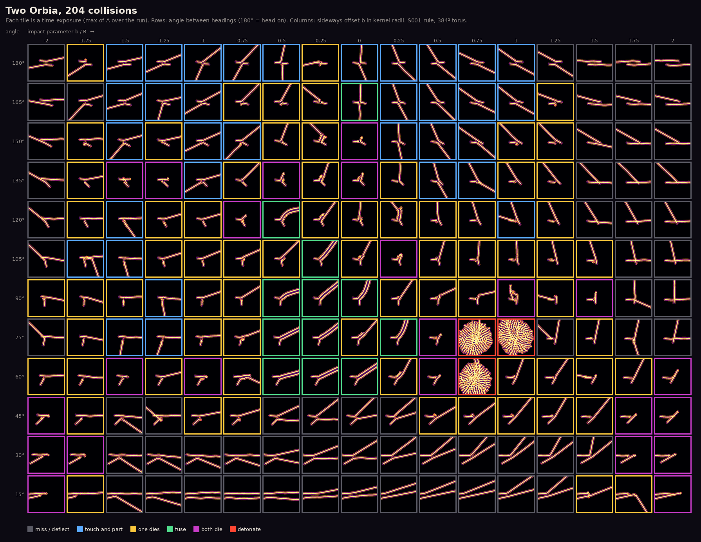
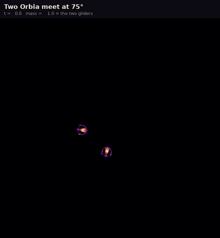
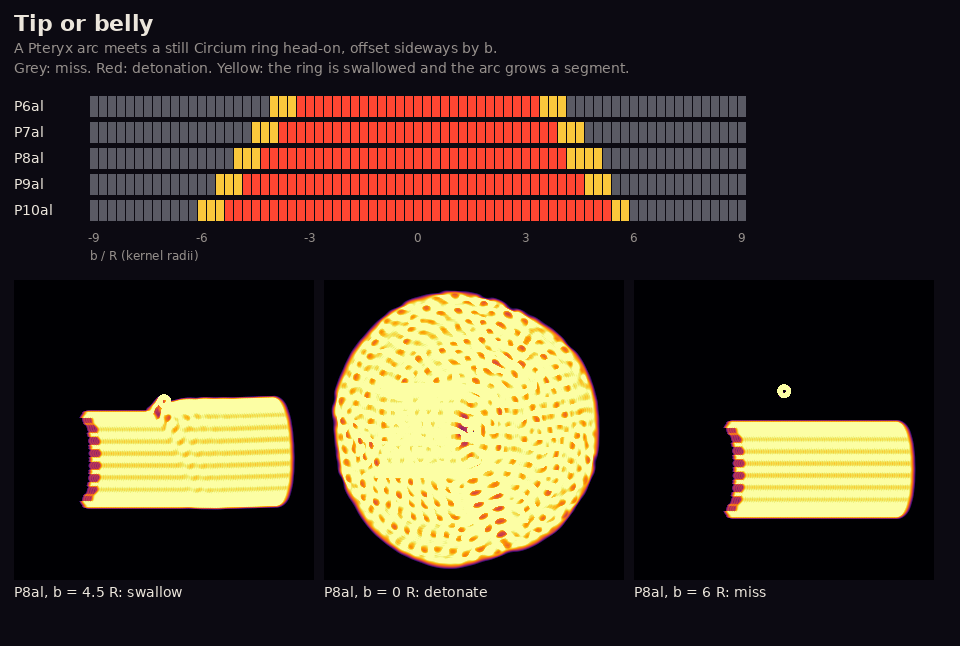
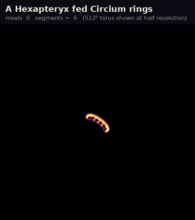
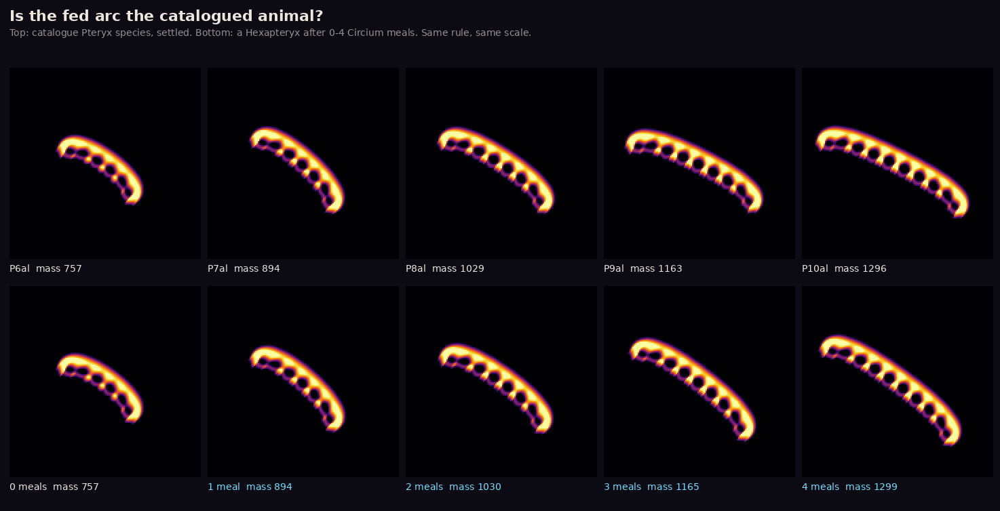
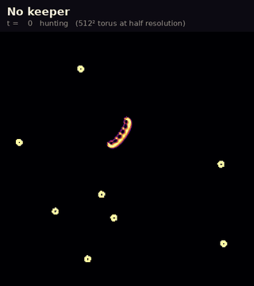
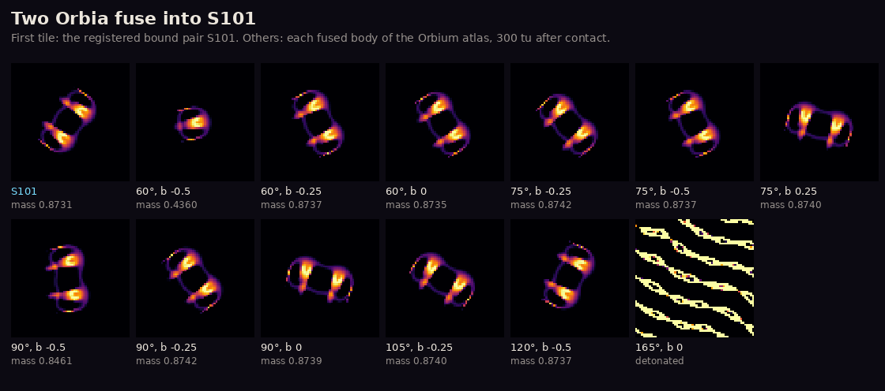

Ecology by collision
The collision zoo
An animal alone tells you what it is. Two animals meeting tell you what it does. Every creature in this room lives under exactly the rule its catalogue entry gives, and shares that rule with the animal it meets, so nothing about the physics changes when they collide. We aimed them at each other from many angles and offsets and wrote down what came out.
Two Orbia, 204 collisions

What you see. Six fates. Most glancing blows bend both tracks. Near head-on, the two touch and part. Very often one track simply ends: one Orbium dies and the other glides on untouched. In a band near 90° the two tracks become one thick track, a two-lobed glider with the mass of both. Some meetings kill both. And in three tiles near 60–75° the pair detonates.
What the ledger says. C080observed. Chan named these outcomes in 2019 without a map; this is the map, for the exact rule of Room 1. Halve the timestep and all six outcomes are still there, but only about half of the tiles keep theirs.

What you see. The two gliders fuse into a knot that will not settle. It throws out stripes, and the stripes fill the world in about 70 time units: two hundred times the mass of the two animals that started it.
What the ledger says. A lone Orbium glides under this rule for at least 20 000 steps C001indep. checked. Two of them, meeting badly, are enough to end the world.
Tip or belly

What you see. Two arcs that touch always explode: there is no bounce and no fusion in this world. A ring that meets an arc's body explodes it too. But a ring that meets the very tip of a wing is swallowed, and the arc comes out heavier. Bigger arcs have their tips further out, and the swallow window moves with them.
What the ledger says. 204 of 204 touching arc pairs detonated; each arc has a swallow window about one radius wide at each tip C081observed. At half the timestep 361 of the 365 ring meetings end the same way C095observed.
The arc that eats rings


What you see. Every ring the arc swallows adds one segment. After one meal it is a Heptapteryx, after two an Octapteryx, and so on: the same shape and the same mass as the catalogued species. A ring holds just about one segment's worth of matter. The arc keeps gliding at the same speed as it grows, and gets straighter.
What the ledger says. Shape correlation 0.993–0.998 with the right catalogue species and mass within 0.3 % C082reproduced. Fed on alternating sides it reaches about 31 segments before a meal explodes it; fed on one side it stalls at 21; at half the timestep it reached 25 C083observed. So the climb is real, but where it stops depends on the keeper and the grid.
A keeper is not a free world. Every ring was placed by hand, and a meal that did not grow the arc was rewound and tried again at another offset; every try is logged. In the first 15 meals of the one-sided run no rewind was needed. Nobody has seen an arc find its own rings.
No keeper

What you see. The arc glides until it meets a ring with a wing tip and swallows it, a segment longer. A hundred time units later it meets the next ring with its body, and the world catches fire.
What the ledger says. We let 64 arcs loose. Every one detonated, after 30 to 385 time units. Only 6 ate a ring first, and none ate two C093observed. The belly is a much bigger target than the tips, so in the wild a ring is mostly a bomb. The ladder of the room above exists, but only a keeper can climb it.
Fusion makes a known animal

What you see. Two crescents riding inside one faint ring, again and again: the same animal as S101. One fused body shed a lobe and went back to being a single Orbium. One detonated, long after it looked settled.
What the ledger says. Nine of twelve match S101's mass, size and speed to the third decimal C094observed. S101 was first found by placing two Orbia side by side; collisions make it too.
A rock that does not feed
We also threw Chan's three-channel gyrans at the still lithos of Room 9's aquarium (24 bombardments, one to four gyrans each). The rock always survived; no gyrans ever stayed bound to it, and crowded gyrans destroyed each other. That is in the notes only, not on the ledger.